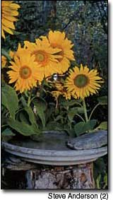
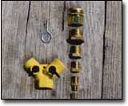
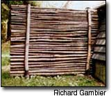
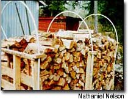
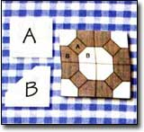

Moving water makes a great addition to any bird feeding station, often attracting birds that do not eat the various seeds normally offered. Even a small drip of water will attract many birds. You can make this dripper device for about $20, using the materials listed below.
Build your tower of couplings from large to small. Wrap the threads with Teflon tape and then snug them up tight for a leakproof set of reducing couplings that connects the end of your garden hose to the inch copper tubing.
Next, choose how you want to shape your tubing. The unit pictured has a spiral twist, first bent around a big tin can, then a smaller one and then an even smaller one for smooth curves. Don't bend your tubing too close to the compression fitting, as this can cause cracking.
Position the dripper just above any broad, shallow dish that will hold water. Ours is a concrete birdbath, placed on a log that fits right into our naturalized setting.
A large screw eye, carefully pried open and then closed around your reducing couplings and screwed into a stake will anchor the system. The "Y" connector attaches to the faucet so other hoses can be used. In order to conserve water, we don't run the dripper all the time.
We do fill the birdbath once a day to keep it fresh. When we have company or on days off, we let it trickle so we can enjoy the extra activity it brings to the bird area. Robins, hummingbirds, catbirds, thrushes and even a grouse or two, usually not attracted by seed feeders, are drawn to this water in our backyard garden.
STEVE ANDERSON
Burnham, Maine
3 feet of 1/4-inch copper tubing
Double (Y) hose connector
3 brass reducing bushings
1/4-inch compression fitting
Swivel hose connector
Large screw eye
Teflon tape
As an avid gardener and salad eater, I have always loved my salad spinner. Now I use it for all kinds of things besides salad. For example, I use it to spin-dry herbs after I've washed them. I find my pesto tastes better if the basil leaves are dry before I process them with olive oil. This summer I used the spinner when I froze surplus vegetables from the garden. After blanching, vegetables are usually soaked in ice water to cool then down quickly, then patted dry with paper towels or dish towels, and finally packed into plastic storage bags. When I process vegetables, I use my salad spinner to spin the vegetables dry. This cuts down on paper towel use (expensive, wastes trees.) Plus, it's much faster!
ERIKA JENSEN
Prairie Farm, Wisconsin
Instead of freezing chicken or beef stock in a large container, I pour it into a wide, shallow bowl, until its about an inch deep, and then pop it into the freezer. Once it's frozen, I remove the resulting disc from the bowl and slip it into a plastic freezer bag. These discs take up less room in the freezer and fit nicely into a soup pot where they are quickly thawed and ready to use.
GRACE BROCKWAY
Chazy Lake, New York
I live in Grants Pass, Oregon, and it gets pretty hot here in the summer - too hot for cooking indoors. When my kids have a sweet tooth, I build a box oven outdoors for making cookies. It also works great for making pies, casseroles and stews. Here's how to make one:
Find a cardboard box about 20 inches by 20 inches by 14 inches, four empty cans from corn or beans, some charcoal and a few stones. Outside, on a dirt surface or on cement, and away from any flammables, arrange the cans in a square about 5 or 6 inches apart. On the ground, in the center of the cans, put five or six charcoal briquettes and light them. Wait until the charcoal is ashy-looking, which means it is ready to cook on. Put your cookie sheet or casserole on the cans and put the box over the top of it all. Use little stones to raise the box edges about an inch, to control the heat and to allow for ventilation. Adjust the temperature with the stones - just experiment and have fun. This works. It also is great to use when camping or in case of a power outage. It even works in the snow!
MARLA MACPHERSON
Merlin, Oregon
I have been a subscriber for more than 20 years. My MOTHER EARTH NEWS magazines will be passed down to my daughter. here is an old recipe for a wonderful facial treatment:
1 tablespoon dry skim milk
1 fresh egg white
1/2 teaspoon honey
Whip ingredients together until smooth. Apply thickly over your face and throat. Do not rub the cream in; just smooth it over your skin as if you were frosting a cake. Leave the mixture on for 15 minutes, then rinse it off with cold water. Finish your facial treatment with your favorite moisturizer.
RHONDA FEATHERINGILL
Palmyra, Indiana
You can make a privacy fence from saplings that need thinning.
RICHARD GAMBIER
Bainbridge, New York
Ever think you could put "plastic" (credit cards) to better use? Recycle them for use as pan scrapers. They're flexible, tough and safely chisel away stuck or burned food from your pots and pan. I think they often do a better job than the plastic pan scrapers that you buy and then throw away.
CHARLES SWISHER
Oxford, Pennsylvania
They remove windshield frost pretty well, too. - MOTHER
An old ironing board makes a nifty, storable, portable potting bench.
ANNA VICTORIA REICH
Albuquerque, New Mexico
Love liquid soap but hate paying the exorbitant prices? Or maybe you can't stand the perfumes they use? Make your own Using scrap from your favorite soap.
Just save a few pump dispensers from shampoo or hand lotion. At the same time save the scrap of soap left after you use a bar. When you have enough saved, put the soap scrap into a clean, glass jar or bowl, and add boiling water to cover. Let this sit until it ha, cooled. Then stir it with a fork, mashing the lumps. Add an inch or so of boiling water, stir well and let cool. When you stir, it should be reasonably smooth but a little stringy. Add water and stir until it is the right consistency, then fill your bottles. Leave some space in case you want to add more water: it sets up a little in the bottle.
JEANETTE HANBERRY
Anderson, South Carolina
The next time you need to wash your tiled or linoleum-covered kitchen floor, try this tip: Before you grab your mob. grab your tea kettle. That's right.
Water is universal solvent and, once heated, it does a great job of loosening most of the food-based grime on a kitchen floor. Pour a little bit of boiling water on the dirtiest spots on your floor. Let it stand for a few minutes. I use this method and then mop with just hot tap water mixed with dishwashing detergent. When I'm done, the floor looks spotless, the kitchen doesn't stink of chemicals and I haven't spent money on expensive cleaners. This method is good for the environment.
HEIDI M. DOUGLASS
Berkley, Massachusetts
I am a longtime subscriber to M OTHER E ARTH N EWS . I always look forward to each new issue and devour it cover to cover. In western Washington state, it often is too wet for wood to season in the open air, so here's my tip:
To build a cordwood rack, I used two pallets, some 2-by-4s, some scrap lumber and three 1/2-inch by 10-foot plastic pipes to build a drying rack. After filling the rack, I attached the plastic pipes as shown and covered the rack loosely with a tarp to allow next year's firewood to dry.
NATHANIEL NELSON
Yelm, Washington
I recycle gallon plastic jugs into quilting templates that last practically forever. I use the almost square ones, like milk and water are bottled in. Cut the flat sides from the jugs and lay them on the pattern. Use a ruler and fine-tip permanent marker to trace the pattern onto the plas tic. Cut out the pieces and save them in small plastic bags labeled with the name of the quilt pattern; also include a small diagram of the finished block. This way you can have dozens of quilting templates at almost no cost.
MARCELLA WHITE
Edmonton, Kentucky
Mother Earth News
|
 |
 |
 |
|
 |
 |
|